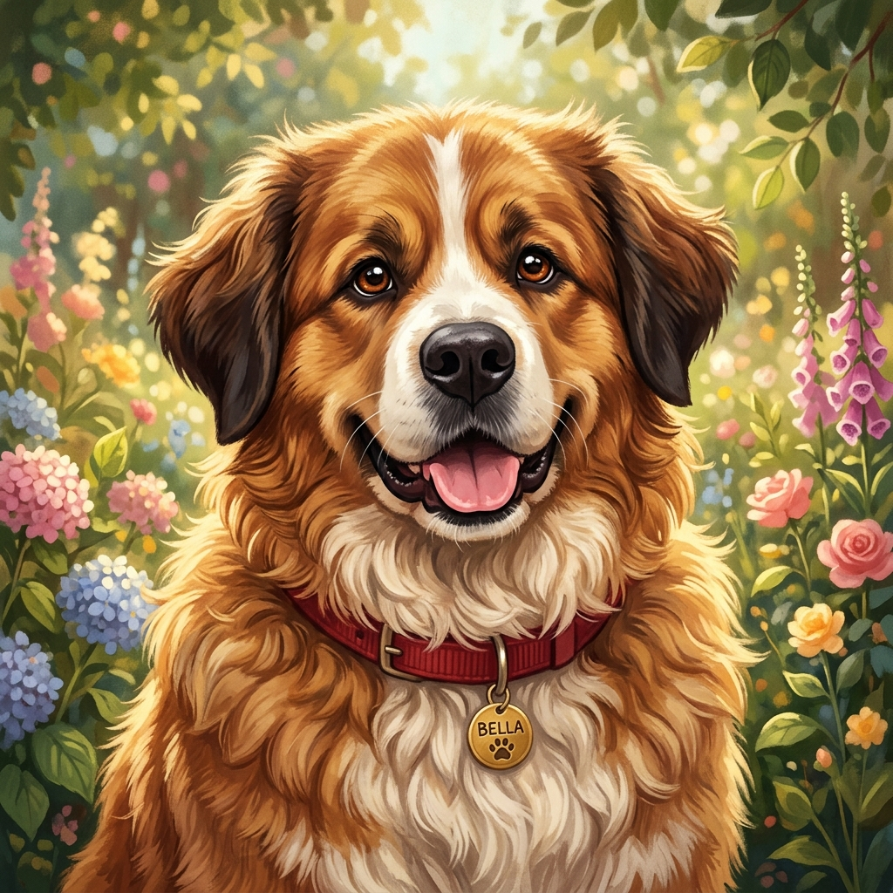

Szia Apa!
Ma egy kicsit másfajta rendszert kell beindítanod! Lekódoltam egy teljes virtuális túrát a saját életedből – az otthoni garázstól és a nagy kerttől kezdve az osztrák autópályán át egészen a CFMOTO-s szerpentinekig és a bográcsig. És ha mind a 6 állomást sikerrel teljesíted, a végén feloldod a valódi születésnapi ajándékodat: a 2027-es Visonta Supermoto Fesztivál hétvégi bérletét, ahova kettesben elmegyünk!
- • A visszaszámláló 42:00 percről indul, amikor ráadod a gyújtást.
- • 6 állomás és 13 fejtörő vár rád. Fent középen egy kis íves műszer számolja a melléfogásokat – nincs büntetés érte, de a végén kiderül, hány próbálkozásból raktad össze a kódot! (Ha valahol elakadnál, a 3. próbálkozás után a rendszer ad egy kis szakmai súgást.)
-
•
Minden állomás végén megszerzel egy számjegyet a fenti 6-jegyű gyújtáskódhoz (
? ? ? ? ? ?), amivel a végén aktiválod a fesztiválbérletet!
Garázskód, biztosítéktábla és vezérlés 🔧
A műhelyajtó zárva van, a szürke T4-esben pedig kiment a főbiztosíték. Lássuk, mennyire vagy formában!
A riasztó 3 számjegyet kér. Számold ki őket a saját járműparkod alapján, és tekerd be a kódot:
Bent vagy a műhelyben! A busz főreléje pontosan 42 ampert kér, és a táblán pontosan 4 darab biztosítékot kell aktívra kapcsolnod. Keresd meg azt a négyest, ami kiadja a 42-t!
Először válaszolj minden autószerelő örök kérdésére, majd rakd sorba a vezérléscsere 5 lépését (1-től 5-ig)!
Kerti logika és Bella kincskeresése 🌿🐾
A műhely kész, de a T4-es slusszkulcsát Bella elcipelte kint a nagy kertbe!
Otthon, a kertben egymás mellett 4 ágyás sorakozik: 1. (bal szél), 2. (bal-közép), 3. (jobb-közép), 4. (jobb szél). Mindegyikbe más kerül: erős paprika, paradicsom, bazsalikom, fokhagyma. Következtesd ki a sorrendet a 4 nyom alapján:

Bella, a kert főfelügyelője
A kaukázusi–bernáthegyi bundás óriás már kint vár a kertben! Tudja ám, hova rejtette a kulcsot, de a vesztegetés kötelező: előbb jár neki a 3 buksi-simogatás!
Raktér-mérlegelés és tachográf matek 🚛🇦🇹
Irány Ausztria! Az ASFINAG kontrollkapu előtt azonban nem hibázhat a tengelysúly és a vezetési időd sem.
A rámpán 6 különböző osztrák raklap áll. Válogasd be őket az első és a hátsó raktér-szekcióba úgy, hogy:
• Az első szekció összsúlya pontosan 13 tonna legyen,
• A hátsó szekció összsúlya is pontosan 13 tonna legyen!
(Nem kell minden raklapot felraknod, ami nem kell, hagyd „Lent”!)
A tengelyterhelés tökéletes! Most számold ki a menetidődet, hogy zöldet kapj a kontrollnál:
CFMOTO-mosás és hágó-matematika 🏍️⛰️
Kamion leparkolva, elő a CFMOTO-val! Előbb egy profi mosás, aztán jöhetnek a szlovák, szlovén és horvát kanyarok!
Kattints az 5 ápolási műveletre pontosan a helyes szakmai sorrendben!
Tábortűz-fizika, bográcsgulyás és čevapčiči 🏕️🔥
Leparkoltad a T4-est a táborhelyen! De mielőtt bármi a bográcsba vagy a grillre kerülne, be kell lőnöd a tökéletes parazsat!
Az alap parázs jelenleg 90 °C-os. A tökéletes bográcsozáshoz és grillezéshez pontosan 210 °C-ra kell beállítanod a tüzet az alábbi fahasábok és az állvány magasságának kombinálásával!
A parázs 210 fokon izzik! Kattints a műveletekre pontosan abban a sorrendben (1-től 5-ig), ahogy egy igazi bográcsmester készíti a gulyást!
Az asztalon 8 alapanyag sorakozik. Kattints pontosan arra az 5-re, amelyek a valódi šopska salátához és a klasszikus čevapčiči tálhoz kellenek (a 3 kakukktojást hagyd kikapcsolva)!
Kowalsky meg a Vega és Parno Graszt 📻🎸🎻
A tábortűz mellett már csak a zenét kell belőnöd a T4-es rádióján!
A végső gyújtáskapcsoló
A 6 állomáson megszerzett gyújtáskódod számjegyei:
4 – 8 – 6 – 9 – 7 – 8
Add össze ezt a 6 számjegyet (4 + 8 + 6 + 9 + 7 + 8), és írd be az eredményt a fesztiválbérlet aktiválásához!
Isten éltessen sokáig a 42. születésnapodon, Apa! ❤️
SZALAI IMRE // MESTERFOKOZATÚ TANÚSÍTVÁNY & VISONTA SUPERMOTO FESZTIVÁLBÉRLET
Drága Apa!
Isten éltessen nagyon-nagyon sokáig a 42. születésnapodon! Remélem, jól szórakoztál a rejtvényeken, és tetszett ez a kis visszatekintés, amit a születésnapodra készítettem.
És hogy ne csak a képernyőn motorozz: a valódi születésnapi ajándékom, hogy 2027 szeptemberében elmegyünk kettesben a Visonta Supermoto Fesztiválra a Black Star Speedwayre! A hétvégi bérletedet már intéztem, csinálunk egy igazi apa-lánya motoros hétvégét!
Legyen nagyon szép és boldog ez az éved! Kívánok Neked nagyon jó egészséget, sok pihenést otthon a kertben Bellával, rengeteg balesetmentes kilométert az utakon, napsütéses motoros szerpentineket, meg persze sok-sok jó bográcsozást és kempingezést!
Nagyon szeretlek!
— A Kislányod ❤️
💡 Tipp: A gombra bökve elmentheted a tanúsítványt a telefonodra, vagy a fenti képre hosszan nyomva is lementheted!
💡 Tipp: A gombra bökve azonnal elmentheted a belépődet a telefonodra, de a fenti bérletet hosszan megnyomva is lementheted!